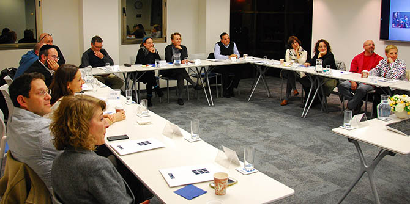

המפגש נפתח בסבב עדכונים שהתמקד בשאלה "איפה אני בעולם"? כל בוגר התבקש לשלוח מראש תמונה אישית ותמונה מקצועית. השיח נגע בתחום האישי, אך התמקד בעיקר בתפקיד שהבוגר ממלא ובאתגרים שהוא או היא חווים בעבודתם. חלק מהבוגרים נכנסו לתפקידיהם בזמן האחרון ושיתפו את הקבוצה בחוויית הכניסה לתפקיד. חלקו השני של המפגש הוקדש ללמידה משותפת, אשר עסקה הפעם באתגרי הניהול בעידן הנוכחי: "ניהול רשתי ומורכבות". אבנר הכהן, פסיכולוג קליני ויועץ ארגוני, המשמש יועץ ביחידת הבוגרים, הנחה דיון מרתק ששילב בין הפרדיגמות החדשות להתנסות האישית של הבוגרים בארגוניהם.
תכניות ההמשך מושתתות על ההנחה שקבוצת העמיתים (המחזור) היא משאב, ושהידע המקצועי של בוגרי מנדל, הפועלים בתחומים שונים, תורם להזנה הדדית. תכניות אלו נועדו ליצור זירה מוגנת ואינטימית לליבון דילמות מקצועיות, להצגת מקורות מידע עדכניים על המתרחש בתחומי החינוך והחברה ולפיתוח קהילת בוגרים לומדת. במפגשים נידונים תכנים אישיים ומקצועיים המשקפים את האתגרים ואת הסביבה הארגונית שבה פועלים הבוגרים. מודל הפעולה שפיתחה יחידת הבוגרים עם השנים מותאם לכל מחזור על-פי צרכיו ועל-פי שלבי התפתחותו.

{kind=link}